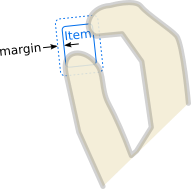

TapHandler QML Type
Handler for taps and clicks. More...
| Import Statement: | import QtQuick |
| Inherits: |
Properties
- acceptedButtons : flags
- acceptedDevices : flags
- acceptedModifiers : flags
- acceptedPointerTypes : flags
- active : bool
- cursorShape : Qt::CursorShape
- dragThreshold : int
- enabled : bool
- exclusiveSignals : enumeration
(since 6.5) - gesturePolicy : enumeration
- grabPermissions : flags
- longPressThreshold : real
- margin : real
- parent : Item
- point : handlerPoint
- pressed : bool
- tapCount : int
- target : Item
- timeHeld : real
Signals
- canceled(eventPoint point)
- doubleTapped(eventPoint eventPoint, Qt::MouseButton button)
- grabChanged(PointerDevice::GrabTransition transition, eventPoint point)
- longPressed()
- singleTapped(eventPoint eventPoint, Qt::MouseButton button)
- tapCountChanged()
- tapped(eventPoint eventPoint, Qt::MouseButton button)
Detailed Description
TapHandler is a handler for taps on a touchscreen or clicks on a mouse.
Detection of a valid tap gesture depends on gesturePolicy. The default value is DragThreshold, which requires the press and release to be close together in both space and time. In this case, DragHandler is able to function using only a passive grab, and therefore does not interfere with event delivery to any other Items or Input Handlers. So the default gesturePolicy is useful when you want to modify behavior of an existing control or Item by adding a TapHandler with bindings and/or JavaScript callbacks.
Note that buttons (such as QPushButton) are often implemented not to care whether the press and release occur close together: if you press the button and then change your mind, you need to drag all the way off the edge of the button in order to cancel the click. For this use case, set the gesturePolicy to TapHandler.ReleaseWithinBounds.
import QtQuick Rectangle { id: button signal clicked property alias text: buttonLabel.text height: Math.max(Screen.pixelDensity * 7, buttonLabel.implicitHeight * 1.2) width: Math.max(Screen.pixelDensity * 11, buttonLabel.implicitWidth * 1.3) radius: 3 property color dark: Qt.darker(palette.button, 1.3) gradient: Gradient { GradientStop { position: 0.0; color: tapHandler.pressed ? dark : palette.button } GradientStop { position: 1.0; color: dark } } TapHandler { id: tapHandler gesturePolicy: TapHandler.ReleaseWithinBounds onTapped: button.clicked() } Text { id: buttonLabel text: "Click Me" color: palette.buttonText anchors.centerIn: parent } }
For multi-tap gestures (double-tap, triple-tap etc.), the distance moved must not exceed QStyleHints::mouseDoubleClickDistance() with mouse and QStyleHints::touchDoubleTapDistance() with touch, and the time between taps must not exceed QStyleHints::mouseDoubleClickInterval().
See also MouseArea and Qt Quick Examples - Pointer Handlers.
Property Documentation
acceptedButtons : flags |
The mouse buttons which can activate this Pointer Handler.
By default, this property is set to Qt.LeftButton. It can be set to an OR combination of mouse buttons, and will ignore events from other buttons.
For example, a control could be made to respond to left and right clicks in different ways, with two handlers:
Item { TapHandler { onTapped: console.log("left clicked") } TapHandler { acceptedButtons: Qt.RightButton onTapped: console.log("right clicked") } }
Note: Tapping on a touchscreen or tapping the stylus on a graphics tablet emulates clicking the left mouse button. This behavior can be altered via acceptedDevices or acceptedPointerTypes.
acceptedDevices : flags |
The types of pointing devices that can activate this Pointer Handler.
By default, this property is set to PointerDevice.AllDevices. If you set it to an OR combination of device types, it will ignore events from non-matching devices.
For example, a control could be made to respond to mouse and stylus clicks in one way, and touchscreen taps in another way, with two handlers:
Item { TapHandler { acceptedDevices: PointerDevice.Mouse | PointerDevice.TouchPad | PointerDevice.Stylus onTapped: console.log("clicked") } TapHandler { acceptedDevices: PointerDevice.TouchScreen onTapped: console.log("tapped") } }
Note: Not all platforms are yet able to distinguish mouse and touchpad; and on those that do, you often want to make mouse and touchpad behavior the same.
acceptedModifiers : flags |
If this property is set, it will require the given keyboard modifiers to be pressed in order to react to pointer events, and otherwise ignore them.
If this property is set to Qt.KeyboardModifierMask (the default value), then the PointerHandler ignores the modifier keys.
For example, an Item could have two handlers of the same type, one of which is enabled only if the required keyboard modifiers are pressed:
Item { TapHandler { acceptedModifiers: Qt.ControlModifier onTapped: console.log("control-tapped") } TapHandler { acceptedModifiers: Qt.NoModifier onTapped: console.log("tapped") } }
If you set acceptedModifiers to an OR combination of modifier keys, it means all of those modifiers must be pressed to activate the handler:
Item { TapHandler { acceptedModifiers: Qt.ControlModifier | Qt.AltModifier | Qt.ShiftModifier onTapped: console.log("control-alt-shift-tapped") } }
The available modifiers are as follows:
| Constant | Description |
|---|---|
NoModifier | No modifier key is allowed. |
ShiftModifier | A Shift key on the keyboard must be pressed. |
ControlModifier | A Ctrl key on the keyboard must be pressed. |
AltModifier | An Alt key on the keyboard must be pressed. |
MetaModifier | A Meta key on the keyboard must be pressed. |
KeypadModifier | A keypad button must be pressed. |
GroupSwitchModifier | X11 only (unless activated on Windows by a command line argument). A Mode_switch key on the keyboard must be pressed. |
KeyboardModifierMask | The handler does not care which modifiers are pressed. |
If you need even more complex behavior than can be achieved with combinations of multiple handlers with multiple modifier flags, you can check the modifiers in JavaScript code:
Item { TapHandler { onTapped: switch (point.modifiers) { case Qt.ControlModifier | Qt.AltModifier: console.log("CTRL+ALT"); break; case Qt.ControlModifier | Qt.AltModifier | Qt.MetaModifier: console.log("CTRL+META+ALT"); break; default: console.log("other modifiers", point.modifiers); break; } } }
See also Qt::KeyboardModifier.
acceptedPointerTypes : flags |
The types of pointing instruments (finger, stylus, eraser, etc.) that can activate this Pointer Handler.
By default, this property is set to PointerDevice.AllPointerTypes. If you set it to an OR combination of device types, it will ignore events from non-matching devices.
For example, a control could be made to respond to mouse, touch, and stylus clicks in some way, but delete itself if tapped with an eraser tool on a graphics tablet, with two handlers:
Rectangle { id: rect TapHandler { acceptedPointerTypes: PointerDevice.Generic | PointerDevice.Finger | PointerDevice.Pen onTapped: console.log("clicked") } TapHandler { acceptedPointerTypes: PointerDevice.Eraser onTapped: rect.destroy() } }
active : bool |
This holds true whenever this Input Handler has taken sole responsibility for handing one or more eventPoints, by successfully taking an exclusive grab of those points. This means that it is keeping its properties up-to-date according to the movements of those eventPoints and actively manipulating its target (if any).
cursorShape : Qt::CursorShape |
This property holds the cursor shape that will appear whenever the mouse is hovering over the parent item while active is true.
The available cursor shapes are:
- Qt.ArrowCursor
- Qt.UpArrowCursor
- Qt.CrossCursor
- Qt.WaitCursor
- Qt.IBeamCursor
- Qt.SizeVerCursor
- Qt.SizeHorCursor
- Qt.SizeBDiagCursor
- Qt.SizeFDiagCursor
- Qt.SizeAllCursor
- Qt.BlankCursor
- Qt.SplitVCursor
- Qt.SplitHCursor
- Qt.PointingHandCursor
- Qt.ForbiddenCursor
- Qt.WhatsThisCursor
- Qt.BusyCursor
- Qt.OpenHandCursor
- Qt.ClosedHandCursor
- Qt.DragCopyCursor
- Qt.DragMoveCursor
- Qt.DragLinkCursor
The default value is not set, which allows the cursor of parent item to appear. This property can be reset to the same initial condition by setting it to undefined.
Note: When this property has not been set, or has been set to undefined, if you read the value it will return Qt.ArrowCursor.
See also Qt::CursorShape, QQuickItem::cursor(), and HoverHandler::cursorShape.
dragThreshold : int |
The distance in pixels that the user must drag an eventPoint in order to have it treated as a drag gesture.
The default value depends on the platform and screen resolution. It can be reset back to the default value by setting it to undefined. The behavior when a drag gesture begins varies in different handlers.
enabled : bool |
If a PointerHandler is disabled, it will reject all events and no signals will be emitted.
exclusiveSignals : enumeration |
Determines the exclusivity of the singleTapped() and doubleTapped() signals.
| Constant | Description |
|---|---|
NotExclusive | (the default) singleTapped() and doubleTapped() are emitted immediately when the user taps once or twice, respectively. |
SingleTap | singleTapped() is emitted immediately when the user taps once, and doubleTapped() is never emitted. |
DoubleTap | doubleTapped() is emitted immediately when the user taps twice, and singleTapped() is never emitted. |
(SingleTap | DoubleTap) | Both signals are delayed until QStyleHints::mouseDoubleClickInterval(), such that either singleTapped() or doubleTapped() can be emitted, but not both. But if 3 or more taps occur within mouseDoubleClickInterval, neither signal is emitted. |
Note: The remaining signals such as tapped() and tapCountChanged() are always emitted immediately, regardless of this property.
This property was introduced in Qt 6.5.
gesturePolicy : enumeration |
The spatial constraint for a tap or long press gesture to be recognized, in addition to the constraint that the release must occur before longPressThreshold has elapsed. If these constraints are not satisfied, the tapped signal is not emitted, and tapCount is not incremented. If the spatial constraint is violated, pressed transitions immediately from true to false, regardless of the time held.
The gesturePolicy also affects grab behavior as described below.
| Constant | Description |
|---|---|
TapHandler.DragThresholdGrab on press: passive | (the default value) The eventPoint must not move significantly. If the mouse, finger or stylus moves past the system-wide drag threshold (QStyleHints::startDragDistance), the tap gesture is canceled, even if the device or finger is still pressed. This policy can be useful whenever TapHandler needs to cooperate with other input handlers (for example DragHandler) or event-handling Items (for example Qt Quick Controls), because in this case TapHandler will not take the exclusive grab, but merely a passive grab. That is, DragThreshold is especially useful to augment existing behavior: it reacts to tap/click/long-press even when another item or handler is already reacting, perhaps even in a different layer of the UI. The following snippet shows one TapHandler as used in one component; but if we stack up two instances of the component, you will see the handlers in both of them react simultaneously when a press occurs over both of them, because the passive grab does not stop event propagation:Item { width: 120; height: 80 component Button : Rectangle { TapHandler { id: tapHandler gesturePolicy: TapHandler.DragThreshold // the default onTapped: tapFlash.start() } } Button { x: 10; y: 10 } Button { x: 30; y: 30 } } |
TapHandler.WithinBounds
Grab on press: exclusive | If the eventPoint leaves the bounds of the parent Item, the tap gesture is canceled. The TapHandler will take the exclusive grab on press, but will release the grab as soon as the boundary constraint is no longer satisfied.TapHandler { id: tapHandler gesturePolicy: TapHandler.WithinBounds onTapped: tapFlash.start() } |
TapHandler.ReleaseWithinBoundsGrab on press: exclusive | At the time of release (the mouse button is released or the finger is lifted), if the eventPoint is outside the bounds of the parent Item, a tap gesture is not recognized. This corresponds to typical behavior for button widgets: you can cancel a click by dragging outside the button, and you can also change your mind by dragging back inside the button before release. Note that it's necessary for TapHandler to take the exclusive grab on press and retain it until release in order to detect this gesture.TapHandler { id: tapHandler gesturePolicy: TapHandler.ReleaseWithinBounds onTapped: tapFlash.start() } |
TapHandler.DragWithinBounds
Grab on press: exclusive | On press, TapHandler takes the exclusive grab; after that, the eventPoint can be dragged within the bounds of the parent item, while the timeHeld property keeps counting, and the longPressed() signal will be emitted regardless of drag distance. However, like WithinBounds, if the point leaves the bounds, the tap gesture is canceled(), active() becomes false, and timeHeld stops counting. This is suitable for implementing press-drag-release components, such as menus, in which a single TapHandler detects press, timeHeld drives an "opening" animation, and then the user can drag to a menu item and release, while never leaving the bounds of the parent scene containing the menu. This value was added in Qt 6.3.TapHandler { id: menuPopupHandler gesturePolicy: TapHandler.DragWithinBounds onPressedChanged: if (pressed) { menu.x = point.position.x - menu.width / 2 menu.y = point.position.y - menu.height / 2 } else { feedback.text = menu.highlightedMenuItem selectFlash.start() } onCanceled: feedback.text = "canceled" } |


The Qt Quick Examples - Pointer Handlers demonstrates some use cases for these.
Note: If you find that TapHandler is reacting in cases that conflict with some other behavior, the first thing you should try is to think about which gesturePolicy is appropriate. If you cannot fix it by changing gesturePolicy, some cases are better served by adjusting grabPermissions, either in this handler, or in another handler that should prevent TapHandler from reacting.
grabPermissions : flags |
This property specifies the permissions when this handler's logic decides to take over the exclusive grab, or when it is asked to approve grab takeover or cancellation by another handler.
| Constant | Description |
|---|---|
PointerHandler.TakeOverForbidden | This handler neither takes from nor gives grab permission to any type of Item or Handler. |
PointerHandler.CanTakeOverFromHandlersOfSameType | This handler can take the exclusive grab from another handler of the same class. |
PointerHandler.CanTakeOverFromHandlersOfDifferentType | This handler can take the exclusive grab from any kind of handler. |
PointerHandler.CanTakeOverFromItems | This handler can take the exclusive grab from any type of Item. |
PointerHandler.CanTakeOverFromAnything | This handler can take the exclusive grab from any type of Item or Handler. |
PointerHandler.ApprovesTakeOverByHandlersOfSameType | This handler gives permission for another handler of the same class to take the grab. |
PointerHandler.ApprovesTakeOverByHandlersOfDifferentType | This handler gives permission for any kind of handler to take the grab. |
PointerHandler.ApprovesTakeOverByItems | This handler gives permission for any kind of Item to take the grab. |
PointerHandler.ApprovesCancellation | This handler will allow its grab to be set to null. |
PointerHandler.ApprovesTakeOverByAnything | This handler gives permission for any type of Item or Handler to take the grab. |
The default is PointerHandler.CanTakeOverFromItems | PointerHandler.CanTakeOverFromHandlersOfDifferentType | PointerHandler.ApprovesTakeOverByAnything which allows most takeover scenarios but avoids e.g. two PinchHandlers fighting over the same touchpoints.
longPressThreshold : real |
The time in seconds that an eventPoint must be pressed in order to trigger a long press gesture and emit the longPressed() signal, if the value is greater than 0. If the point is released before this time limit, a tap can be detected if the gesturePolicy constraint is satisfied. If longPressThreshold is 0, the timer is disabled and the signal will not be emitted. If longPressThreshold is set to undefined, the default value is used instead, and can be read back from this property.
The default value is QStyleHints::mousePressAndHoldInterval() converted to seconds.
margin : real |
The margin beyond the bounds of the parent item within which an eventPoint can activate this handler. For example, on a PinchHandler where the target is also the parent, it's useful to set this to a distance at least half the width of a typical user's finger, so that if the parent has been scaled down to a very small size, the pinch gesture is still possible. Or, if a TapHandler-based button is placed near the screen edge, it can be used to comply with Fitts's Law: react to mouse clicks at the screen edge even though the button is visually spaced away from the edge by a few pixels.
The default value is 0.

parent : Item |
The Item which is the scope of the handler; the Item in which it was declared. The handler will handle events on behalf of this Item, which means a pointer event is relevant if at least one of its eventPoints occurs within the Item's interior. Initially target() is the same, but it can be reassigned.
See also target and QObject::parent().
point : handlerPoint |
The eventPoint currently being handled. When no point is currently being handled, this object is reset to default values (all coordinates are 0).
pressed : bool |
Holds true whenever the mouse or touch point is pressed, and any movement since the press is compliant with the current gesturePolicy. When the eventPoint is released or the policy is violated, pressed will change to false.
tapCount : int |
The number of taps which have occurred within the time and space constraints to be considered a single gesture. The counter is reset to 1 if the button changed. For example, to detect a triple-tap, you can write:
Rectangle { width: 100; height: 30 signal tripleTap TapHandler { acceptedButtons: Qt.AllButtons onTapped: if (tapCount == 3) tripleTap() } }
target : Item |
The Item which this handler will manipulate.
By default, it is the same as the parent, the Item within which the handler is declared. However, it can sometimes be useful to set the target to a different Item, in order to handle events within one item but manipulate another; or to null, to disable the default behavior and do something else instead.
timeHeld : real |
The amount of time in seconds that a pressed point has been held, without moving beyond the drag threshold. It will be updated at least once per frame rendered, which enables rendering an animation showing the progress towards an action which will be triggered by a long-press. It is also possible to trigger one of a series of actions depending on how long the press is held.
A value of less than zero means no point is being held within this handler's Item.
Note: If gesturePolicy is set to TapHandler.DragWithinBounds, timeHeld does not stop counting even when the pressed point is moved beyond the drag threshold, but only when the point leaves the parent item's bounds.
Signal Documentation
canceled(eventPoint point) |
If this handler has already grabbed the given point, this signal is emitted when the grab is stolen by a different Pointer Handler or Item.
Note: The corresponding handler is onCanceled.
doubleTapped(eventPoint eventPoint, Qt::MouseButton button) |
This signal is emitted when the parent Item is tapped twice within a short span of time (QStyleHints::mouseDoubleClickInterval()) and distance (QStyleHints::mouseDoubleClickDistance() or QStyleHints::touchDoubleTapDistance()). This signal always occurs after singleTapped, tapped, and tapCountChanged. The eventPoint signal parameter contains information from the release event about the point that was tapped, and button is the mouse button that was clicked, or NoButton on a touchscreen.
Note: The corresponding handler is onDoubleTapped.
grabChanged(PointerDevice::GrabTransition transition, eventPoint point) |
This signal is emitted when the grab has changed in some way which is relevant to this handler.
The transition (verb) tells what happened. The point (object) is the point that was grabbed or ungrabbed.
Valid values for transition are:
| Constant | Description |
|---|---|
PointerDevice.GrabExclusive | This handler has taken primary responsibility for handling the point. |
PointerDevice.UngrabExclusive | This handler has given up its previous exclusive grab. |
PointerDevice.CancelGrabExclusive | This handler's exclusive grab has been taken over or cancelled. |
PointerDevice.GrabPassive | This handler has acquired a passive grab, to monitor the point. |
PointerDevice.UngrabPassive | This handler has given up its previous passive grab. |
PointerDevice.CancelGrabPassive | This handler's previous passive grab has terminated abnormally. |
Note: The corresponding handler is onGrabChanged.
longPressed() |
This signal is emitted when the parent Item is pressed and held for a time period greater than longPressThreshold. That is, if you press and hold a touchpoint or button, while any movement does not exceed the drag threshold, then the longPressed signal will be emitted at the time that timeHeld exceeds longPressThreshold.
Note: The corresponding handler is onLongPressed.
singleTapped(eventPoint eventPoint, Qt::MouseButton button) |
This signal is emitted when the parent Item is tapped once. After an amount of time greater than QStyleHints::mouseDoubleClickInterval, it can be tapped again; but if the time until the next tap is less, tapCount will increase. The eventPoint signal parameter contains information from the release event about the point that was tapped, and button is the mouse button that was clicked, or NoButton on a touchscreen.
Note: The corresponding handler is onSingleTapped.
tapCountChanged() |
This signal is emitted when the parent Item is tapped once or more (within a specified time and distance span) and when the present tapCount differs from the previous tapCount.
Note: The corresponding handler is onTapCountChanged.
tapped(eventPoint eventPoint, Qt::MouseButton button) |
This signal is emitted each time the parent Item is tapped.
That is, if you press and release a touchpoint or button within a time period less than longPressThreshold, while any movement does not exceed the drag threshold, then the tapped signal will be emitted at the time of release. The eventPoint signal parameter contains information from the release event about the point that was tapped, and button is the mouse button that was clicked, or NoButton on a touchscreen.
import QtQuick Rectangle { width: 100 height: 100 TapHandler { acceptedButtons: Qt.LeftButton | Qt.RightButton onTapped: (eventPoint, button)=> console.log("tapped", eventPoint.device.name, "button", button, "@", eventPoint.scenePosition) } }
Note: The corresponding handler is onTapped.